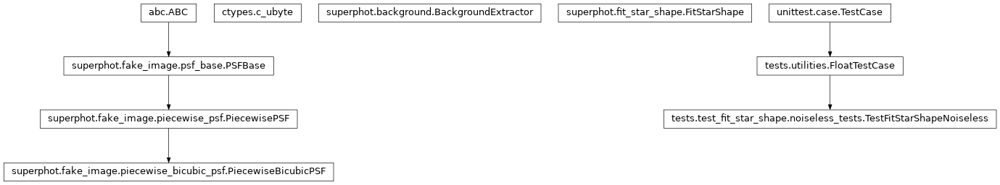
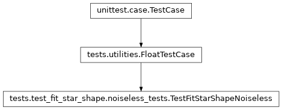

tests.test_fit_star_shape.noiseless_tests module¶
Class Inheritance Diagram¶

Test SuperPhot’s fit_star_shape module.
-
class
tests.test_fit_star_shape.noiseless_tests.TestFitStarShapeNoiseless(methodName='runTest')[source]¶ Bases:
tests.utilities.FloatTestCaseTest piecewise bicubic PSF fitting on noiseless images.
-
check_results(result_tree, image_index, sources, extra_variables)[source]¶ Assert that fitted PSF map and source fluxes match expectations.
Parameters: - result_tree – The result tree containing the PSF fitting configuration and results.
- image_index – The index of the image for which to check results within the result tree (the same as the index when fitting was called).
- sources – The sources argument used to generate the image that was fit. See same name argument of run_test.
- extra_variables – A list of the names of any variables in addition to x and y which participate in the PSF fit.
Returns: None
-
create_debug_files(image, source_list, fit_config, sub_image=None)[source]¶ Create the pair of files used by the C test of PSF fitting.
Parameters: - image (2D numpy array) – The image being fit.
- source_list – The list of sources participating in the fit.
- fit_config – The
FitStarShape.configurationof the PSF fitting object used for fitting. - sub_image – The index of the image within the list of images being fit simultaneously.
-
run_test(sources, psffit_terms, extra_variables=None)[source]¶ Assert that a fit of a series of images works exactly.
Parameters: - sources –
A list of lists of dictionaries specifying the list of sources to fit. Each list of dictionaries specifies the sources to drop on a single image. Each source must contain the following:
- x: The x coordinate of the source center.
- y: The y coordinate of the source center.
- psf_args: The arguments with which to create the PiecewiseBicubicPSF for the source. See PiecewiseBicubicPSF.__init__ for details.
- psffit_terms – The terms on which PSF parameters depend on. See –psf.terms argument of the fitpsf command.
- extra_variables – A list of the variables in addition to x and y that participate in the fitting terms.
Returns: None
- sources –
-